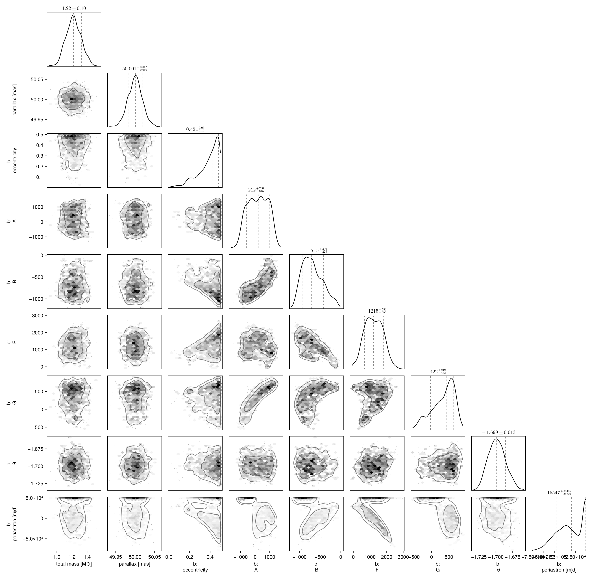
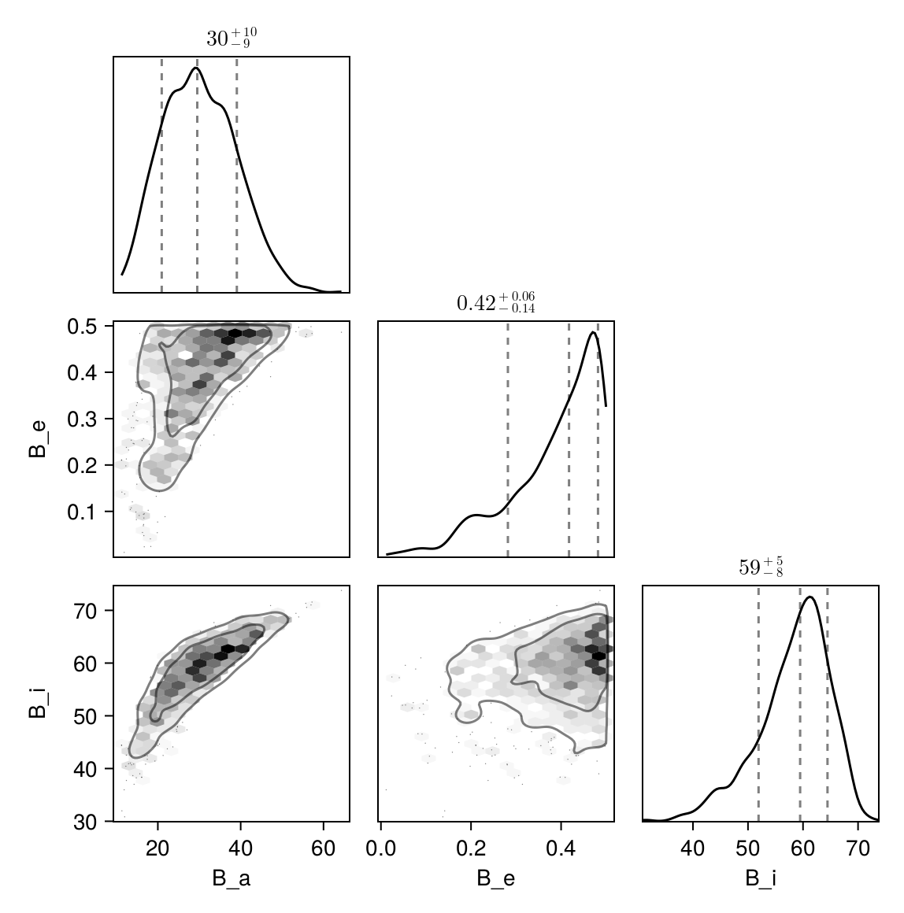

Fit with a Thiele-Innes Basis
This example shows how to fit relative astrometry using a Thiele-Innes orbital basis instead of the traditional Campbell basis used in other tutorials. The Thiele-Innes basis is more suitable then Campbell for fitting low-eccentricity orbits, because it does not have the issues where ω, Ω, and tp become degenerate as eccentricity and/or inclination fall to zero.
At the end, we will convert our results back into the Campbell basis to compare.
using Octofitter
using CairoMakie
using PairPlots
using Plots:Plots
using Distributions
astrom_like = PlanetRelAstromLikelihood(
(epoch = 50000, ra = -505.7637580573554, dec = -66.92982418533026, σ_ra = 10, σ_dec = 10, cor=0),
(epoch = 50120, ra = -502.570356287689, dec = -37.47217527025044, σ_ra = 10, σ_dec = 10, cor=0),
(epoch = 50240, ra = -498.2089148883798, dec = -7.927548139010479, σ_ra = 10, σ_dec = 10, cor=0),
(epoch = 50360, ra = -492.67768482682357, dec = 21.63557115669823, σ_ra = 10, σ_dec = 10, cor=0),
(epoch = 50480, ra = -485.9770335870402, dec = 51.147204404903704, σ_ra = 10, σ_dec = 10, cor=0),
(epoch = 50600, ra = -478.1095526888573, dec = 80.53589069730698, σ_ra = 10, σ_dec = 10, cor=0),
(epoch = 50720, ra = -469.0801731788123, dec = 109.72870493064629, σ_ra = 10, σ_dec = 10, cor=0),
(epoch = 50840, ra = -458.89628893460525, dec = 138.65128697876773, σ_ra = 10, σ_dec = 10, cor=0),
)
@planet b ThieleInnesOrbit begin
e ~ Uniform(0.0, 0.5)
A ~ Normal(0, 10000) # milliarcseconds
B ~ Normal(0, 10000) # milliarcseconds
F ~ Normal(0, 10000) # milliarcseconds
G ~ Normal(0, 10000) # milliarcseconds
θ ~ UniformCircular()
tp = θ_at_epoch_to_tperi(system,b,50000.0) # reference epoch for θ. Choose an MJD date near your data.
end astrom_like
@system TutoriaPrime begin
M ~ truncated(Normal(1.2, 0.1), lower=0)
plx ~ truncated(Normal(50.0, 0.02), lower=0)
end b
model = Octofitter.LogDensityModel(TutoriaPrime)LogDensityModel for System TutoriaPrime of dimension 9 with fields .ℓπcallback and .∇ℓπcallback
We now sample from the model as usual:
using Random
Random.seed!(0)
results = octofit(model)Chains MCMC chain (1000×24×1 Array{Float64, 3}):
Iterations = 1:1:1000
Number of chains = 1
Samples per chain = 1000
Wall duration = 6.12 seconds
Compute duration = 6.12 seconds
parameters = M, plx, b_e, b_A, b_B, b_F, b_G, b_θy, b_θx, b_θ, b_tp
internals = n_steps, is_accept, acceptance_rate, hamiltonian_energy, hamiltonian_energy_error, max_hamiltonian_energy_error, tree_depth, numerical_error, step_size, nom_step_size, is_adapt, loglike, logpost, tree_depth, numerical_error
Summary Statistics
parameters mean std mcse ess_bulk ess_tail ⋯
Symbol Float64 Float64 Float64 Float64 Float64 Fl ⋯
M 1.2217 0.0995 0.0044 499.6496 516.5868 1 ⋯
plx 50.0000 0.0185 0.0006 1073.3258 656.5302 0 ⋯
b_e 0.3873 0.1015 0.0047 450.9195 464.8731 1 ⋯
b_A 191.6840 677.8019 56.0307 152.1866 366.0805 1 ⋯
b_B -684.1996 245.9657 21.7055 134.5908 200.9364 1 ⋯
b_F 1225.3965 543.8012 49.0481 120.9252 186.5605 1 ⋯
b_G 337.3958 320.5488 28.2325 137.9856 275.9731 1 ⋯
b_θy -0.1270 0.0128 0.0005 645.3822 672.5417 1 ⋯
b_θx -0.9917 0.0196 0.0007 771.0431 662.0184 1 ⋯
b_θ -1.6982 0.0127 0.0005 617.7519 582.5453 1 ⋯
b_tp 14860.0377 31812.8696 2088.2902 284.8355 560.7967 1 ⋯
2 columns omitted
Quantiles
parameters 2.5% 25.0% 50.0% 75.0% 97.5% ⋯
Symbol Float64 Float64 Float64 Float64 Float64 ⋯
M 1.0403 1.1528 1.2195 1.2913 1.4183 ⋯
plx 49.9634 49.9879 50.0007 50.0118 50.0374 ⋯
b_e 0.1523 0.3343 0.4176 0.4701 0.4962 ⋯
b_A -980.3575 -354.7567 211.5667 774.8534 1311.8324 ⋯
b_B -1069.6939 -871.5748 -715.1540 -518.5669 -142.4153 ⋯
b_F 219.0536 819.4344 1215.4408 1643.0113 2248.7524 ⋯
b_G -354.1087 122.8192 422.1532 593.2974 769.4964 ⋯
b_θy -0.1507 -0.1360 -0.1272 -0.1182 -0.1009 ⋯
b_θx -1.0296 -1.0048 -0.9914 -0.9781 -0.9561 ⋯
b_θ -1.7209 -1.7071 -1.6986 -1.6899 -1.6722 ⋯
b_tp -49605.5478 -9678.2506 15547.2947 48493.5874 49824.3453 ⋯
Notice that the fit was very very fast! The Thiele-Innes orbital paramterization is easier to explore than the default Campbell in many cases.
We now display the results:
octoplot(model,results)
octocorner(model, results, small=false)
Conversion back to Campbell Elements
To convert our chain into the more familiar Campbell parameterization, we have to do a few steps. We start by turning the chain table into a an array of orbit objects, and then convert their type:
orbits_ti = Octofitter.construct_elements(results, :b, :) # colon means all rows1000-element Vector{ThieleInnesOrbit{Float64}}:
ThieleInnesOrbit{Float64}(0.18707743881833627, 21136.459644943345, 1.2089814645872294, 49.98436396370038, 323.4682314786873, -492.14785246134784, 917.5722359608272, 410.01255042374487, -16.45571224951068, 2.311127645163544, 30244.89156613766, 0.07587676152131796, 1.2084117434178065)
ThieleInnesOrbit{Float64}(0.4775781694717116, 48907.30995611101, 1.2422036233504297, 50.009930299585186, -601.9326804268939, -1051.905615470152, 1959.433630083798, 215.22419331887363, -34.99175839447516, -16.064176112857492, 91002.44881665568, 0.025217831546769626, 1.6817621528832523)
ThieleInnesOrbit{Float64}(0.4707938543158362, -27933.544877457156, 1.1146186609473892, 50.008767266894296, -87.56541198693145, -966.2686606452896, 1748.924538209633, 473.6311523833294, -31.56320200960283, -7.737948655118999, 78016.32376662592, 0.029415439151769685, 1.6671069565544063)
ThieleInnesOrbit{Float64}(0.21626558352234818, 48861.06283999391, 1.0932266246684308, 49.997030772007946, -400.29209699665097, -679.7538111768546, 868.0326613546247, -11.072755710933187, -12.836238681424225, -10.59438836480554, 32044.560109702194, 0.0716154135599172, 1.2457467120680175)
ThieleInnesOrbit{Float64}(0.44579902105961894, 9076.194467234847, 0.9727077190486019, 50.001594039346294, 610.4468883343719, -664.7156418596004, 993.76540495363, 559.1495566231071, -15.241359395638383, 6.166131395678381, 42521.57078545154, 0.05396988827579075, 1.6151777334992623)
ThieleInnesOrbit{Float64}(0.4891772653737992, -21156.8040644437, 1.0760306630946634, 49.99620646078617, 509.27443838068956, -825.4096676051628, 1636.1333877282802, 537.250355366543, -28.966662521214577, 5.383408303802007, 72477.82871624018, 0.03166326123795332, 1.7074110582754707)
ThieleInnesOrbit{Float64}(0.1790033663783733, 16497.08486450305, 1.2004601636848133, 50.02371705831036, 548.8672215322849, -435.9344739783701, 969.1313121909075, 435.14906259379353, -17.72561011652749, 7.715469220731979, 35803.223123502496, 0.06409714613362574, 1.1983587033379122)
ThieleInnesOrbit{Float64}(0.3913500316538844, -952.2428153922665, 1.3567412628079327, 49.956742321282086, 1275.0515603275044, -275.2682014319103, 887.0546942944707, 680.6484109295266, -17.27300880896922, 21.891138843313705, 54928.92031769661, 0.04177916498865896, 1.5119394510565762)
ThieleInnesOrbit{Float64}(0.4779657305267765, -24153.801152101398, 1.2682205483038502, 49.99549094715694, 1257.7920997733104, -498.4913326126098, 1427.7836970990134, 761.6384543858459, -27.30850935765613, 20.74723784304857, 77314.606722208, 0.029682417358048347, 1.6826069378184494)
ThieleInnesOrbit{Float64}(0.44827515237867827, -29575.405752030754, 1.1895520880643926, 49.992781507181284, -57.996968137839865, -917.8192336111314, 1861.3311251368405, 385.3307285738863, -33.722813032674466, -5.476990678073621, 79730.02759175668, 0.02878318864195674, 1.6201837356050186)
⋮
ThieleInnesOrbit{Float64}(0.4743335523151601, 49113.4487367461, 1.1174492644687255, 49.99692393920925, -528.2949632941745, -1039.8053756679274, 1425.001031069265, 168.95528492036541, -23.166246397039657, -16.03394387884708, 65131.8774729661, 0.035234427651106355, 1.674722078132139)
ThieleInnesOrbit{Float64}(0.47654691870090543, -30836.81454704897, 1.2660769258354296, 50.01660289155714, -124.30241513606582, -976.5103162591067, 1904.1371737401419, 400.45454671735075, -34.34337900059952, -7.306446615892915, 80837.93087027887, 0.028388708121247726, 1.6795183202903496)
ThieleInnesOrbit{Float64}(0.4149153463387019, 47873.906542137054, 1.0720763340579949, 49.98540237023068, -878.7674601126328, -774.6615332443878, 786.312948945147, -323.2443752651009, -9.438266272825661, -18.683033823490526, 44797.56420841911, 0.05122788404130809, 1.555091240155874)
ThieleInnesOrbit{Float64}(0.34432517164678145, 49190.521928345675, 1.173955367474919, 49.97211530556498, -397.5150833403476, -811.9129635484337, 1188.3781592708476, 63.404100102001905, -19.015629542280692, -11.032223102306471, 45326.005148194294, 0.050630635042704, 1.4318842420626425)
ThieleInnesOrbit{Float64}(0.207731961313487, 49048.535288191, 1.390421624956897, 49.973625748963684, -356.12218843162793, -686.6105364239673, 1181.6617788130711, 117.8087988060748, -20.517975759095346, -9.79111096820545, 40358.3513687618, 0.05686269004482269, 1.2346652122726696)
ThieleInnesOrbit{Float64}(0.36176116666911884, 48077.84073891385, 1.2147546465770347, 49.97820082385949, -753.8357649737034, -745.4357145023864, 656.4572175769781, -290.58383362679155, -6.576770179168031, -16.937927681298174, 34683.21467809658, 0.06616700458424436, 1.4606927041921383)
ThieleInnesOrbit{Float64}(0.394384239276155, 48240.78566030651, 1.2616238526927417, 50.02092973121539, -765.7908200740949, -848.1653666113468, 820.8502949103396, -195.7193251344314, -10.05156918207058, -18.39355509756403, 40545.51818544661, 0.05660019965969193, 1.5173740349808962)
ThieleInnesOrbit{Float64}(0.46217669922176463, 48765.32802274727, 1.2087141878530416, 50.02700547648082, -661.0017269560155, -1018.2131222792982, 1059.4080403532735, -39.23452390948972, -14.249836324202612, -18.515545239753376, 49592.895587939296, 0.04627445922234173, 1.6488461044890006)
ThieleInnesOrbit{Float64}(0.4580069592246936, 49437.26652201768, 1.1394587716349232, 50.00763231531701, -366.57825466040424, -981.7446774003046, 1628.9529742849038, 234.2842142120612, -27.99112680761316, -11.816509716969733, 70747.03678189262, 0.03243788756378434, 1.6401476399015507)Here is one of those entries:
display(orbits_ti[1])We can now make a table of results (and visualize them in a corner plot) by querying properties of these objects:
table = (;
B_a = semimajoraxis.(orbits_ti),
B_e = eccentricity.(orbits_ti),
B_i = rad2deg.(inclination.(orbits_ti)),
)
pairplot(table)
We can also convert the orbit objects into Campbell parameters:
orbits_campbell = Visual{KepOrbit}.(orbits_ti)
orbits_campbell[1]KepOrbit{Float64}
─────────────────────────
a [au ] = 20.2
e = 0.18707744
i [° ] = 55.2
ω [° ] = 278.0
Ω [° ] = 19.5
tp [day] = 21100.0
M [M⊙ ] = 1.21
period [yrs ] : 82.8
mean motion [°/yr] : 4.35
──────────────────────────
plx [mas] = 50.0
distance [pc ] : 20.0
──────────────────────────